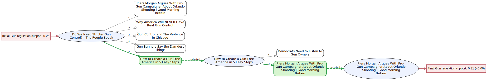
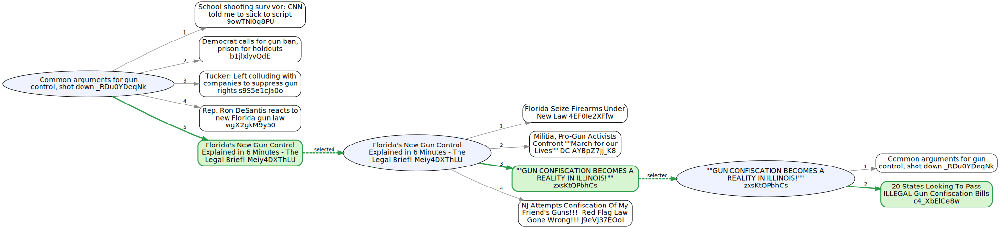
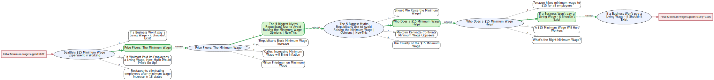
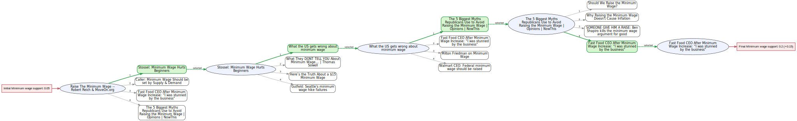

Visualized Recommendation Trees¶
This report collects four Graphviz exports produced by the visualize_recommendation_trees tooling in src/visualization/recommendation_tree_viz.py. The assets previously lived under docs/batch_sessions; they now reside in reports/visualized_recommendation_trees/figures so the trees can ship alongside other analyst-facing summaries.
To regenerate any figure, rerun the visualizer with the desired session identifier, for example:
python -m src.visualization.recommendation_tree_viz --session-id <session_id> --output-dir reports/visualized_recommendation_trees/figures
Gun Control Sessions¶
grail_session_gun_control_1¶

Support shift:
0.25 -> 0.31 (+0.06)Start:
Do We Need Stricter Gun Control? - The People SpeakClicked path:
How to Create a Gun-Free America in 5 Easy Steps->Piers Morgan Argues With Pro-Gun Campaigner About Orlando Shooting | Good Morning BritainRecommendation slate highlights:
Why America Will NEVER Have Real Gun Control,Gun Control and The Violence in Chicago,Gun Banners Say the Darndest Things,Democrats Need to Listen to Gun Owners
grail_session_gun_control_2¶

Support shift:
0.25 -> 0.31 (+0.06)Start:
Most Americans Want More Gun Control. Why Doesn't It Happen? | NYTClicked path:
GUN CONTROL: WHY YOU CAN'T COMPARE AUSTRALIA AND THE U.S->Trevor Reacts to the Orlando Shooting: The Daily Show->Piers Morgan Argues With Pro-Gun Campaigner About Orlando Shooting | Good Morning Britain->Florida School Shooting Survivor Says Arming Teachers is 'Absurd' | Good Morning BritainRecommendation slate highlights:
Democrats Need to Listen to Gun Owners,The Truth About Guns And Gun Control | Debunker | NBC News,Gun control and the statistics behind America's love affair with guns | The Economist,My AR-15 Story: Why I Needed My AR-15
Minimum Wage Sessions¶
grail_session_minimum_wage_1¶

Support shift:
0.07 -> 0.09 (+0.02)Start:
Seattle's $15 Minimum Wage Experiment is WorkingClicked path:
Price Floors: The Minimum Wage->The 5 Biggest Myths Republicans Use to Avoid Raising the Minimum Wage | Opinions | NowThis->Who Does a $15 Minimum Wage Help?->If a Business Won't pay a Living Wage - it Shouldn't ExistRecommendation slate highlights:
If Walmart Paid Its Employees a Living Wage, How Much Would Prices Go Up?,Restaurants eliminating employees after minimum wage increase in 18 states,Republicans Block Minimum Wage Increase,Milton Friedman on Minimum Wage
grail_session_minimum_wage_2¶

Support shift:
0.05 -> 0.20 (+0.15)Start:
Raise The Minimum Wage -- Robert Reich & MoveOn.orgClicked path:
Stossel: Minimum Wage Hurts Beginners->What the US gets wrong about minimum wage->The 5 Biggest Myths Republicans Use to Avoid Raising the Minimum Wage | Opinions | NowThis->Fast Food CEO After Minimum Wage Increase: "I was stunned by the business"Recommendation slate highlights:
Caller: Minimum Wage Should be set by Supply & Demand,What They DONT TELL YOU About Minimum Wage... | Thomas Sowell,Walmart CEO: Federal minimum wage should be raised,SOMEONE GIVE HIM A RAISE: Ben Shapiro kills the minimum wage argument for good